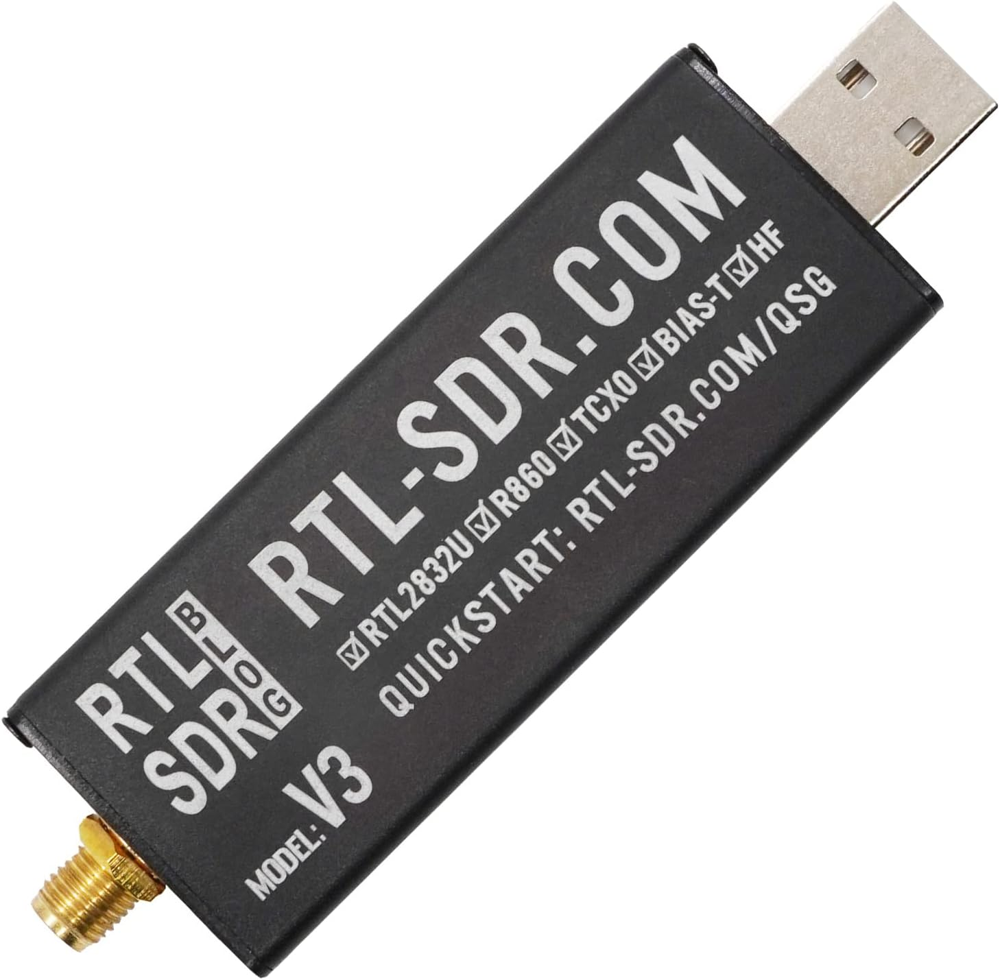
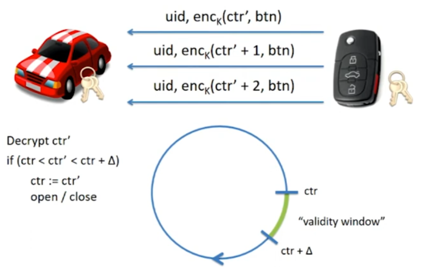
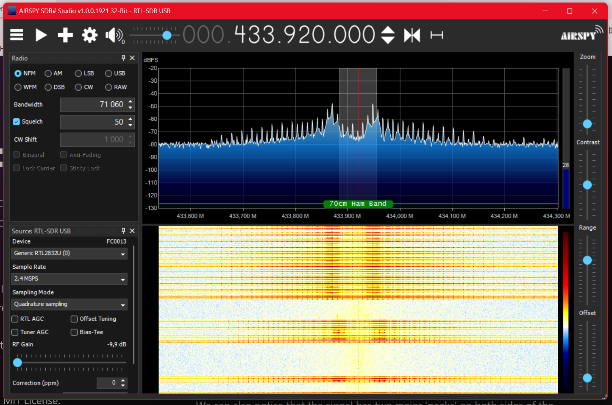
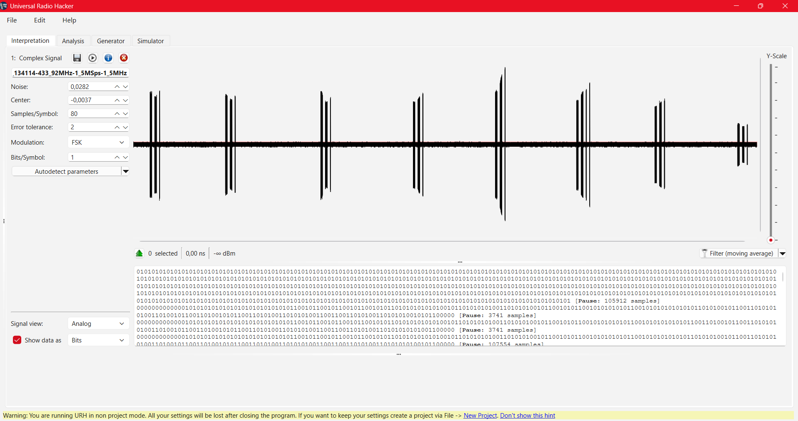
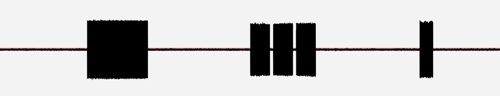
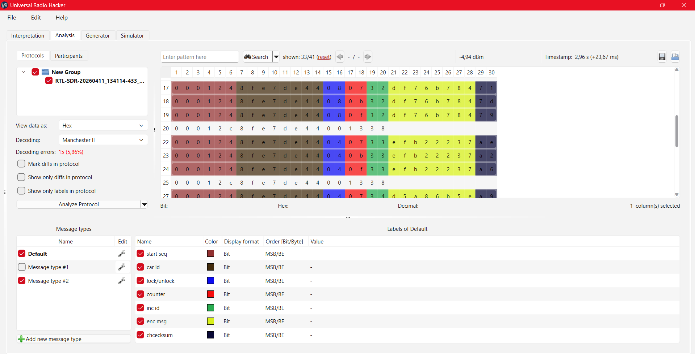

V rámci předmětu Vybrané partie z bezpečnosti komunikací (VPBK) jsme si vybrali projekt
pojednávající o analýze rádiofrekvenčního kódování dálkového ovladače od Ing. Martin Tomis, Ph.D.
a jedná se o téma č. 2.
V rámci tohoto tématu jsme si vybrali analýzu dálkového ovladače od auta. Jedná se o pokus získání
klíče, který tento ovladač vysílá pro jeho odemčení a zjištění klíče následujícího.
Informatický základ
- Jako hardwarové zařízení, které nám pro získávání radiofrekvenčně poslaných klíčů nám poslouží SDR-V2 (FC0013), který je formou USB připojeného zařízení a anténou jako příjímačem.
- Operační systém, na kterém jsme se snažili tento hardware rozchodit, byl Windows 11 od společnosti Microsoft.
- V rámci testování, zda-li nám tento přípravek správně funguje jsme si stáhli ovladače pro RTL na USB a zároveň s tím program, kde jsme si mohli tento přípravek otestovat. Tento program se jmenuje SDR Sharp, kde jsme si nastavili hledanou frekvenci 433.92MHz a několikrát jsme na našem dálkovém ovladači klikli na tlačítko pro odemčení a zamčení automobilu.

Hledaná frekvence
- U automobilových vozidel je frekvence klíčů nastavena vždy stejně, avšak záleží na typu modelu.
- Máme dva typy modulací, které u automobilů rozpoznáváme, tím jsou FSK (Frekvenční modulace) a ASK (Amplitudová modulace)
- V případě frekvenční modulace je frekvence nastavená na 433.92MHz, přičemž se velmi často u těchto klíčů rozpoznává 0 a 1 podle toho, že jejich frekvence se mírně liší. Konkrétně je frekvence 0 často nastavována na 433.87MHz a pro logickou jedničku 433.92MHz.
- V případě amplitudové modulace je použita frekvence 433MHz rovných.
- Pro snímání kódu poslaného z dálkového ovladače jsme použili open-source kód taktéž zvaný jako Universal Radio Hacker. Tento software dokáže jak detekovat na dané frekvenci poslaný kód automobilového klíče, tak jej i částečně dekódovat a přečíst jednotlivé zprávy, které klíč posílá.
Dacia Duster 2022
-
Automobil Dacia Duster z roku 2022, na kterém jsme tento projekt testovali, má ve svém klíči zakomponované následující prvky:
- Tento model ve svém klíči využívá čip s moderním šifrováním ve formě AES, konkrétně se jedná o Hitag AES od společnosti NXP.
- Tento čip využívá 128bitový standard kódování AES, přičemž kódy, které tento klíč posílá vzduchem k autu je kódován pomocí Manchester II. Další kódování, které se však u automobilových klíčů nepoužívají jsou Non Return To Zero nebo třeba Non Return To Zero Inverted.
-
Odeslaná zpráva tímto klíčem by měla být rozdělená do následujících částí:
- Hlavička synchronizace (Preamble): Tato část má 24 bitů a slouží pro probuzení příjímače v autě.
- Sériové číslo (UID): Tato část je složená ze 32 bitů a slouží nám pro identifikace klíče pro to dané auto.
- Stav tlačítek (Povel): Tato část je 8 bitová a jednoznačně identifikuje jaký povel byl autu poslán.
- Čítač zpráv (ID zprávy): Tato část má 8 bitů a slouží pro rozlišení pořadí paketů v rámci jednoho vysílání.
- Sekvenční čítač (Counter): Tato část je složená z 8 bitů a slouží k synchronizaci plovoucího kódu a ochraně proti replay útokům.
- Kryptografický podpis (MAC - Message Authentication Code): Většinou 32, 48 nebo 64 bitový string což je šifrou AES. Rolling Code.
- Kontrolní součet (CRC): Tato část je 8 bitová a slouží pro kontrolu integrity dat.
- Bohužel se však klíč od auta nedá jen tak lehce ukrást a to právě díky tomu, že moderní automobilové klíče obsahují šifrování ve formě AES a Rolling Code mechanismu, který zaručuje generaci "pseudounikátní" kód, který se každým stisknutím mění.
Rolling Code
- Rolling Code je typ šifrování, který se u dnešních moderních používá. Jedná se pseudonáhodný generátor čísel, který je šifrován a nedá se předvídat jeho následující kód.
- Tento klíč se používá jako základní ochrana proti odposouchávání komunikace auta a dálkového ovladače.
- Na následujícím obrázku lze vidět grafické znázornění, jak tento kód funguje.

Praktická ukážka
1. Vyhľadanie a overenie frekvencie
Prvým krokom v praktickej časti bolo presné lokalizovanie a overenie frekvencie, na ktorej ovládač komunikuje. Na tento účel sme využili softvér SDR# (Airspy Studio) v spojení s RTL-SDR prijímačom.

Sledovaním spektrálneho analyzátora a "vodopádu" (waterfall diagram) sme potvrdili, že kľúč vysiela na štandardnej frekvencii 433,92 MHz. Pri každom stlačení tlačidla bol v spektre viditeľný zreteľný nárast energie, čo nám overilo, že signál je dostatočne silný a čistý na to, aby sme mohli pristúpiť k jeho zachytávaniu a následnej analýze v programe URH.
2. Zachytávanie signálu v URH (Universal Radio Hacker)
Po úspešnej identifikácii frekvencie sme prešli do programu URH (Universal Radio Hacker). Tento nástroj nám umožnil signál nielen nahrať, ale aj spätne analyzovať jeho digitálnu štruktúru.
V rámci praktického pokusu sme vykonali sériu meraní, kde sme zaznamenali:
- 4x stlačenie tlačidla pre zamknutie vozidla
- 4x stlačenie tlačidla pre odomknutie vozidla

3. Automatická detekcia parametrov
Surový rádiový signál je pre človeka nečitateľný. Aby sme z neho dostali nuly a jednotky, museli sme určiť správnu moduláciu a Samples/Symbol (rýchlosť prenosu).
Využili sme funkciu "Autodetect parameters", ktorú URH ponúka. Program automaticky analyzoval šírku jednotlivých pulzov a silu signálu, čím nastavil optimálnu hranicu (Center) pre rozlíšenie logickej 0 a 1. Na základe analýzy sme zistili, že signál využíva moduláciu FSK (Frequency Shift Keying), čo je typické pre tento druh diaľkových ovládačov.
Vďaka tomuto kroku sme získali čistý binárny výpis, ktorý sme následne mohli poslať do ďalšej fázy – dekódovania a hľadania štruktúry protokolu.
4. Analýza štruktúry prenosu (Burst Analysis)
Pri detailnom skúmaní nahrávky sme zistili, že jedno krátke stlačenie tlačidla na ovládači nespustí len jeden prenos, ale celú sekvenciu balíkov (burstov). Táto stratégia zabezpečuje, že auto príkaz prijme aj v prípade krátkodobého rušenia.

Celý proces komunikácie sme rozdelili na tri kľúčové fázy:
- Prebudenie (Wake-up): Prvotný signál, ktorý slúži na aktiváciu prijímacieho modulu vo vozidle a nastavenie zosilnenia (AGC).
- Dátové pakety (Data Bursts): Tri identické správy, ktoré nesú samotnú informáciu o ID kľúča a požiadavke (odomknúť/zamknúť). Všimli sme si, že sa v nich menia hodnoty čítačov.
- Ukončovací paket (Goodbye/Release): Posledná, často kratšia správa, ktorá je vyslaná v momente uvoľnenia tlačidla a signalizuje koniec komunikácie.
5. Identifikácia a mapovanie dátových polí
V záložke Analysis sme pristúpili k najdôležitejšej časti – rozšifrovaniu významu jednotlivých bitov. Pomocou farebného kódovania (Labels) sme identifikovali štruktúru protokolu Hitag 2:

Na základe porovnania viacerých nahrávok sme identifikovali tieto polia:
| Farba | Názov poľa | Význam a funkcia |
|---|---|---|
| Rúžová | Syncword | Synchronizačné slovo (0001) na začiatok komunikácie. |
| Hnedá | Car/Remote ID | Unikátne sériové číslo (UID) kľúča (v našom prípade 8fe7de44). |
| Modrá | Lock/Unlock | Identifikátor povelu (napr. 0807 vs 0407). |
| Červená | Counter | Sekvenčné číslo paketu v rámci jedného stlačenia. |
| Zelená | Rolling Code / MAC | Dynamicky sa meniaca kryptografická časť, ktorá chráni auto pred zneužitím. |
| Tmavomodrá | Checksum | Kontrolný súčet na overenie integrity prijatých dát. |
{kind=link}